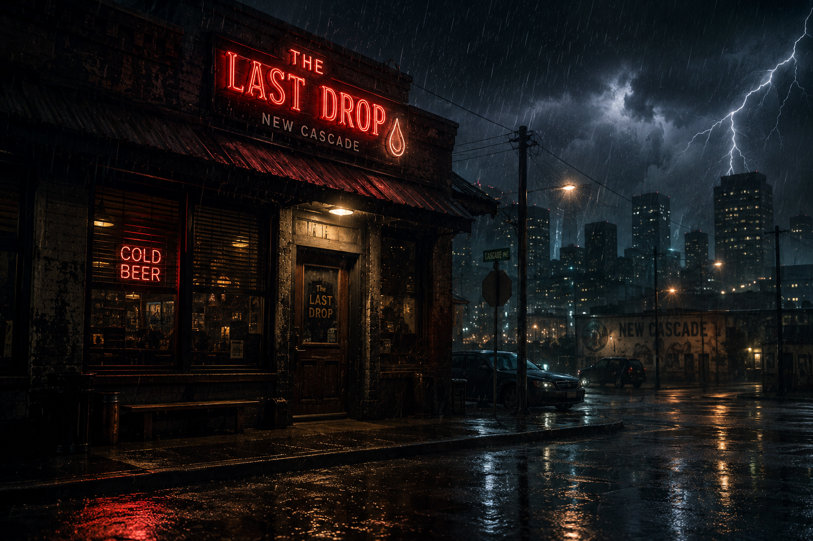
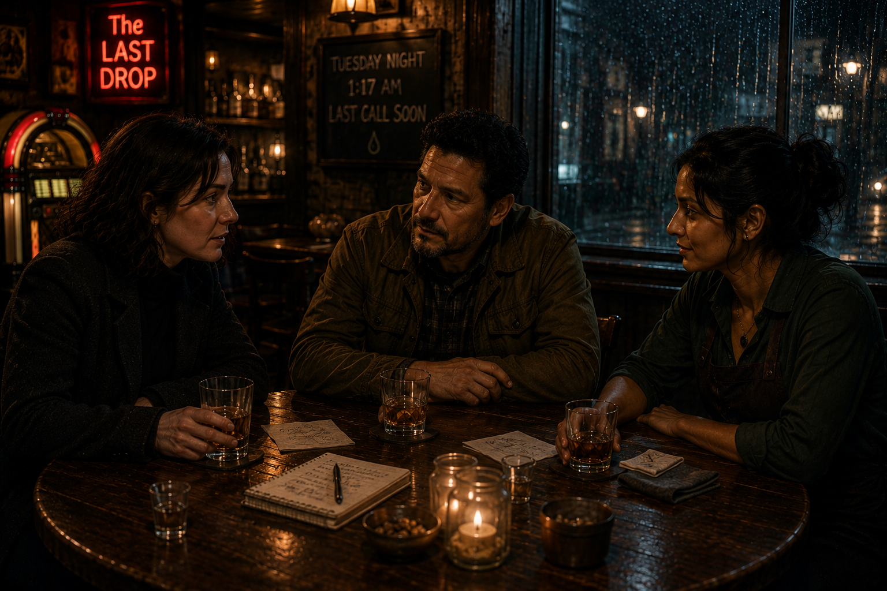
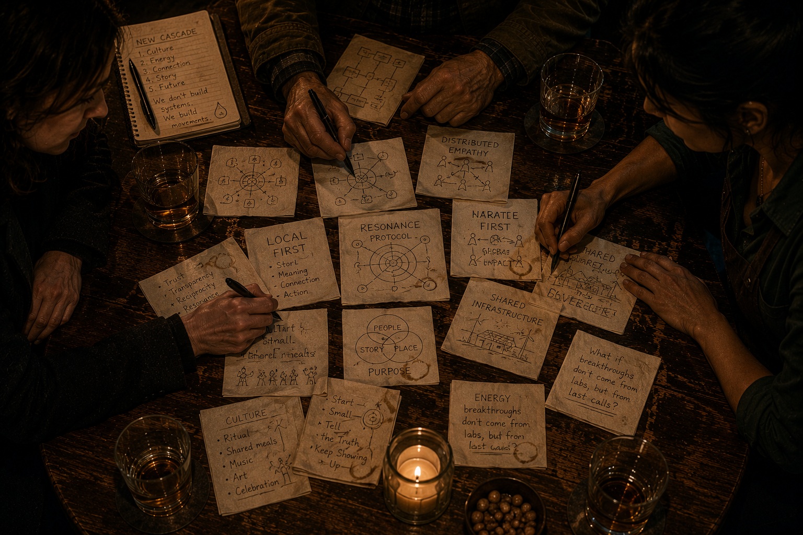
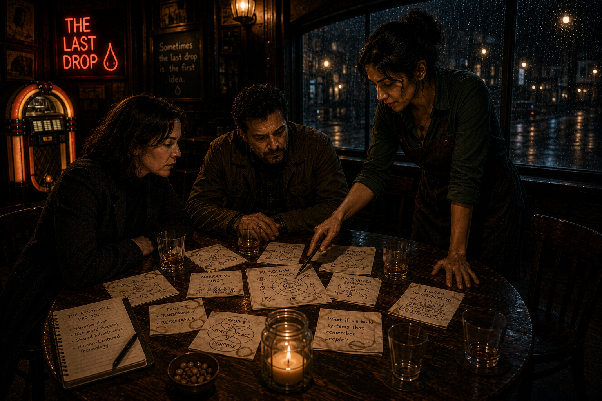
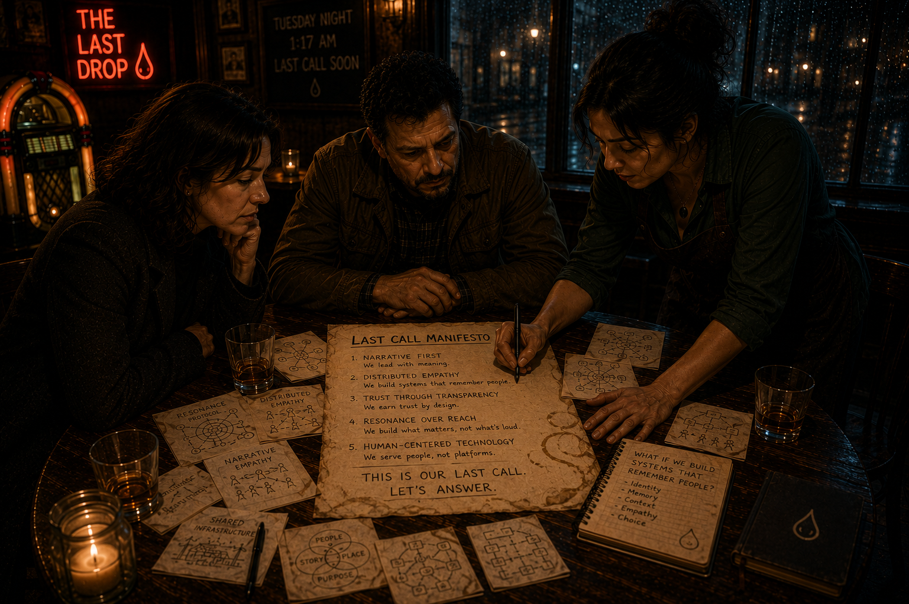
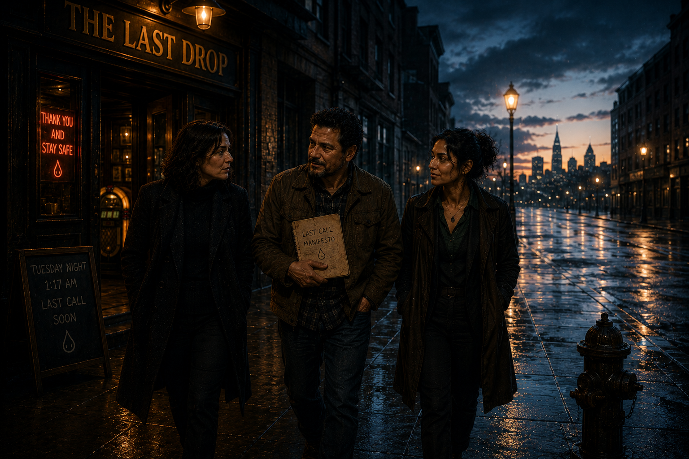
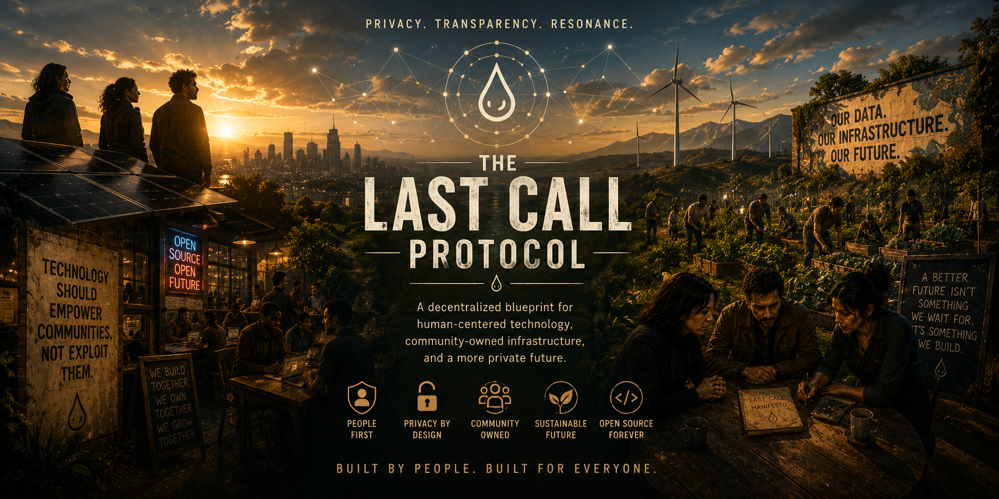

New Cascade · May 2026
Scroll to begin ↓

Scene 01
The rain had been falling sideways for hours. Most people had gone home. The sensible ones, anyway.
Act I — The Night
At The Last Drop, the lights stayed on. Barely. The old generator in the back hummed like an angry cat. The jukebox was playing something by Tom Waits that felt older than the building itself.
Three people who had never met were about to change that.
Scene 02
By the time the bartender sat down, something had already started.
Principal AI Ethicist
She had left after her team's sixth internal memo about long-term effects on people was ignored in favor of another capability scaling sprint. Tonight she wasn't sure if she was mourning her career or celebrating her freedom.
Climate Infrastructure Engineer
"Gets lonely when you realize the real problem isn't the panels. It's getting people to want the same future at the same time."
Bartender. Ex-Journalist.
"Facts bounce off people. A story where someone feels seen? That rewires them. The problem is we've let the worst storytellers own the biggest stages."

Scene 03
"You look like someone who just escaped something," he said.
"I did. You look like someone who's been building things while the rest of us argued about models."
What started as venting quickly became dangerous.

Scene 04
Elena grabbed a napkin. "What if the table is actually the unit? Not the platform, not the app. The table."
Marcus pulled it toward him and started drawing. Then stopped.
"A microgrid is a table. It's a group of things that agreed to share."
They ordered another round.

1:52 AM
"What if resonance is the infrastructure? When a story hits the right frequency in enough people at once, something actually changes. What if we built for that deliberately?"
The Framework
Narrative First
Complex problems must be translated into stories so compelling that three strangers at a bar would drop everything to work on them.
Distributed Empathy
Decision-making systems must model not just votes or capital, but lived experience and care for others.
Regenerative Loops
Every action should be measured by whether it increases the health of both human communities and the living planet.
The Bar Test
If an idea cannot be explained and inspire action from ordinary people after a few drinks, it is not yet ready for the world.
Verifiable Trust
Cryptographic commitments, transparent ledgers, and open-source everything. No black boxes when the stakes are planetary.

Scene 06
They kept talking in the dark for another hour.

Scene 07
They didn't solve everything. They didn't even solve one thing completely.
But they wanted the same thing at the same time, which is rarer than it sounds.

Scene 08
The Last Drop is still there. The table is still in the corner. The napkins are long gone.